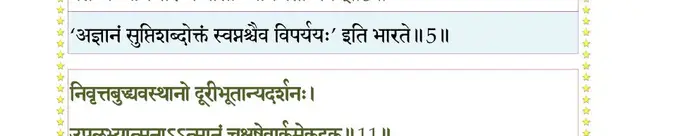
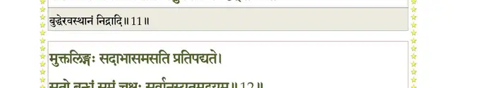
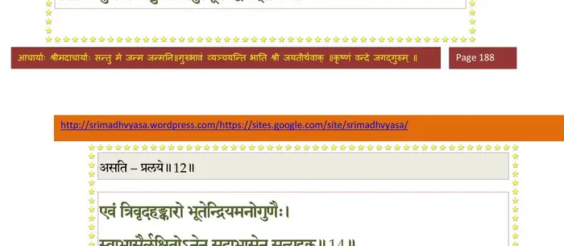
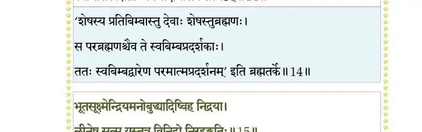
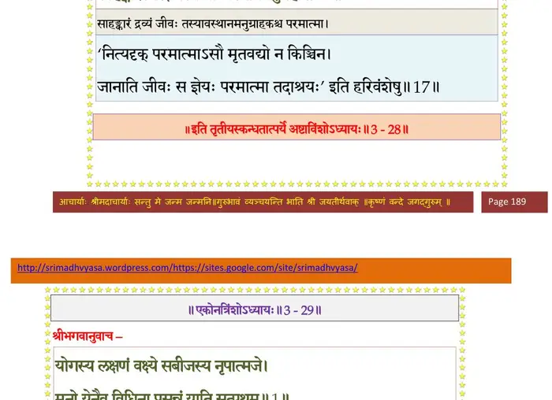

स्कन्ध 3 · अध्याय 28
श्लोक १
प्रकृतिस्थोऽपि पुरुषो नाज्यते प्रकृतैर्गुणैः ।
अविकारादकर्तृत्वान्निर्गृणत्वाज्जलार्कवत्।। १ ।।
अविकारादकर्तृत्वान्निर्गृणत्वाज्जलार्कवत्।। १ ।।
श्लोक २
स एष यर्हि प्रकृतेर्गुणेष्वभिविषज्जते ।
अहङ्कारविमूढात्मा कर्ताऽस्मीत्यभिमन्यते।। २ ।।
अहङ्कारविमूढात्मा कर्ताऽस्मीत्यभिमन्यते।। २ ।।
श्लोक ३
तेन संसारपदवीमवशोऽभ्येत्य निर्वृतः ।
प्रसङ्गिकैः कर्मदोषैः सदसन्मिश्रयोनिषु।। ३ ।।
प्रसङ्गिकैः कर्मदोषैः सदसन्मिश्रयोनिषु।। ३ ।।
श्लोक ४
अर्थे ह्यविद्यमानेऽपि संसृतिर्न निवर्तते ।
ध्यायतो विषयानस्य स्वप्नेऽनर्थागमो यथा।। ४ ।।
ध्यायतो विषयानस्य स्वप्नेऽनर्थागमो यथा।। ४ ।।
श्लोक ५
प्रबुद्ध्य स्वप्नसुप्तिभ्यां संस्मरन्नात्मवैशसम् ।
वैतथ्यं व्यभिचारं च नासौ ध्यायेद् यतो भयम्।। ५ ।।
वैतथ्यं व्यभिचारं च नासौ ध्यायेद् यतो भयम्।। ५ ।।
भागवततात्पर्यनिर्णय

श्लोक ६
अत एव शनैश्चित्तं प्रसक्तमसतां पथि ।
भक्तियोगेन तीव्रेण विरक्त्याऽऽत्मवशं नयेत्।। ६ ।।
भक्तियोगेन तीव्रेण विरक्त्याऽऽत्मवशं नयेत्।। ६ ।।
श्लोक ७
यमादिभिर्योगपथैरभ्यसंच्छ्रद्धयाऽन्वितः ।
मयि भावेन सत्येन मत्कथाश्रवणेन च।। ७ ।।
मयि भावेन सत्येन मत्कथाश्रवणेन च।। ७ ।।
श्लोक ८
सर्वभूतसमत्वेन निर्वैरेणाप्रसङ्गतः ।
ब्रह्मचर्येण मौनेन स्वधर्मेण महीयसा।। ८ ।।
ब्रह्मचर्येण मौनेन स्वधर्मेण महीयसा।। ८ ।।
श्लोक ९
यदृच्छयोपलब्धेन सन्तुष्टो मितभुङ् मुनिः ।
विविक्तशरणः शान्तो मैत्रः करुण आत्मवान्।। ९ ।।
विविक्तशरणः शान्तो मैत्रः करुण आत्मवान्।। ९ ।।
श्लोक १०
सानुबन्धे च देहेऽस्मिन्नकुर्वन्नसदाग्रहम् ।
ज्ञानेन दृष्टतत्त्वेन प्रकृतेः पुरुषस्य च।। १० ।।
ज्ञानेन दृष्टतत्त्वेन प्रकृतेः पुरुषस्य च।। १० ।।
श्लोक ११
निवृत्तबुद्ध्यवस्थानो दूरीभूतान्यदर्शनः ।
उपलभ्यात्मनाऽऽत्मानं चक्षुषेवार्कमेकदृक्।। ११ ।।
उपलभ्यात्मनाऽऽत्मानं चक्षुषेवार्कमेकदृक्।। ११ ।।
भागवततात्पर्यनिर्णय

श्लोक १२
मुक्तलिङ्गः सदाभासमसति प्रतिपद्यते ।
सतो बन्धुं समं चक्षुः सर्वानुस्यूतमद्वयम्।। १२ ।।
सतो बन्धुं समं चक्षुः सर्वानुस्यूतमद्वयम्।। १२ ।।
भागवततात्पर्यनिर्णय

श्लोक १३
यथा जलस्थ आभासः स्थलस्थेनावदृश्यते ।
स्वाभासेन यथा सूर्यो जलस्थेन दिवि स्थितः।। १३ ।।
स्वाभासेन यथा सूर्यो जलस्थेन दिवि स्थितः।। १३ ।।
श्लोक १४
एवं त्रिवृदहङ्कारो भूतेन्द्रियमनोगुणैः ।
स्वाभासैर्लक्षितोऽनेन सदाभासेन सत्यदृक्।। १४ ।।
स्वाभासैर्लक्षितोऽनेन सदाभासेन सत्यदृक्।। १४ ।।
भागवततात्पर्यनिर्णय

श्लोक १५
भूतसूक्ष्मेन्द्रियमनोबुद्ध्यादिष्विह निद्रया ।
लीनेषु सत्सु यस्तत्र विनिद्रो निरहङ्क्रियः।। १५ ।।
लीनेषु सत्सु यस्तत्र विनिद्रो निरहङ्क्रियः।। १५ ।।
भागवततात्पर्यनिर्णय
श्लोक १६
मन्यमानस्तदात्मानमनष्टो नष्टवन्मृषा ।
नष्टेऽहङ्करणे द्रष्टा नष्टचित्त इवातुरः।। १६ ।।
नष्टेऽहङ्करणे द्रष्टा नष्टचित्त इवातुरः।। १६ ।।
भागवततात्पर्यनिर्णय
श्लोक १७
एवं प्रत्यवमृश्यासावात्मानं प्रतिपद्यते ।
साहङ्कारस्य द्रव्यस्य योऽवस्थानमनुग्रहः।। १७ ।।
साहङ्कारस्य द्रव्यस्य योऽवस्थानमनुग्रहः।। १७ ।।
भागवततात्पर्यनिर्णय

श्लोक १८
देवहूतिरुवाच–
पुरुषं प्रकृतिर्ब्रह्मन् न विमुञ्चति कर्हिचित् ।
अन्योन्यापाश्रयत्वाच्च नित्यत्वादनयोः प्रभो।। १८ ।।
पुरुषं प्रकृतिर्ब्रह्मन् न विमुञ्चति कर्हिचित् ।
अन्योन्यापाश्रयत्वाच्च नित्यत्वादनयोः प्रभो।। १८ ।।
श्लोक १९
यथा गन्धस्य भूमेश्च न भावो व्यतिरेकतः ।
अपां रसस्य च यथा तथा बुद्धेः परस्य च।। १९ ।।
अपां रसस्य च यथा तथा बुद्धेः परस्य च।। १९ ।।
श्लोक २०
अकर्तुः कर्मबन्धोऽयं पुरुषस्य यदाश्रयः ।
गुणेषु सत्सु प्रकृतेः कैवल्यं तेष्वतः कथम्।। २० ।।
गुणेषु सत्सु प्रकृतेः कैवल्यं तेष्वतः कथम्।। २० ।।
श्लोक २१
सकृत् तत्त्वावमर्शेन निवृत्तं भयमुल्बणम् ।
निवृत्तस्यानिवृत्तत्त्वात् पुनः प्रत्यवतिष्ठते।। २१ ।।
निवृत्तस्यानिवृत्तत्त्वात् पुनः प्रत्यवतिष्ठते।। २१ ।।
श्लोक २२
भगवानुवाच–
अनिमित्तप्रवृत्तेन स्वधर्मेणामलत्मना ।
तीव्रया मयि भक्त्या च श्रुतिसंभृतया चिरम्।। २२ ।।
अनिमित्तप्रवृत्तेन स्वधर्मेणामलत्मना ।
तीव्रया मयि भक्त्या च श्रुतिसंभृतया चिरम्।। २२ ।।
श्लोक २३
दृष्टतत्त्वेन ज्ञानेन वैराग्येण बलीयसा ।
तपोयुक्तेन योगेन तीव्रेणात्मसमाधिना।। २३ ।।
तपोयुक्तेन योगेन तीव्रेणात्मसमाधिना।। २३ ।।
श्लोक २४
प्रकृतिः पुरुषस्यैवं दह्यमाना त्वहर्निशम् ।
तिरोभवित्री शनकैरग्नेर्योनिरिवारणिः।। २४ ।।
तिरोभवित्री शनकैरग्नेर्योनिरिवारणिः।। २४ ।।
श्लोक २५
भुक्तभोगा परित्यक्ता दृष्टदोषा च नित्यशः ।
नेश्वरस्याशुभं धत्ते स्वे महिमि्न स्थितस्य च।। २५ ।।
नेश्वरस्याशुभं धत्ते स्वे महिमि्न स्थितस्य च।। २५ ।।
श्लोक २६
यथा ह्यप्रतिबुद्धस्य प्रस्वापो बह्वनर्थकृत् ।
स एव प्रतिबुद्धस्य न वै मोहाय कल्पते।। २६ ।।
स एव प्रतिबुद्धस्य न वै मोहाय कल्पते।। २६ ।।
श्लोक २७
एवं विदिततत्त्वस्य प्रकृतिर्मयि मानसम् ।
युञ्जतो नापकुरुते आत्मारामस्य कर्हिचित्।। २७ ।।
युञ्जतो नापकुरुते आत्मारामस्य कर्हिचित्।। २७ ।।
श्लोक २८
यदैवमध्यात्मरतः कालेन बहुजन्मना ।
सर्वत्र जातवैराग्य आब्रह्मभवनान्मुनिः।। २८ ।।
सर्वत्र जातवैराग्य आब्रह्मभवनान्मुनिः।। २८ ।।
श्लोक २९
मद्भक्तः प्रतिबुद्धार्थो मत्प्रसादेन भूयसा ।
निःश्रेयसं स्वसंस्थानं कैवल्याख्यं मदाश्रयम्।। २९ ।।
निःश्रेयसं स्वसंस्थानं कैवल्याख्यं मदाश्रयम्।। २९ ।।
श्लोक ३०
प्रप्नोतीहाञ्जसा धीरः स्वदृशा च्छिन्नसंशयः ।
यद् गत्वा न निवर्तेत योगी लिङ्गविनिर्गमे।। ३० ।।
यद् गत्वा न निवर्तेत योगी लिङ्गविनिर्गमे।। ३० ।।
श्लोक ३१
यदा न योगोपचितासु चेतो
मायासु सिद्धस्य विषज्जते च ।
अनन्यहेतुष्वथ मे गतिः स्याद्
आत्यन्तिकी यत्र न मृत्युहासः।। ३१ ।।
मायासु सिद्धस्य विषज्जते च ।
अनन्यहेतुष्वथ मे गतिः स्याद्
आत्यन्तिकी यत्र न मृत्युहासः।। ३१ ।।
।। इति श्रीमद्भागवते तृतीयस्कन्धे अष्टाविंशोऽध्यायः ।।